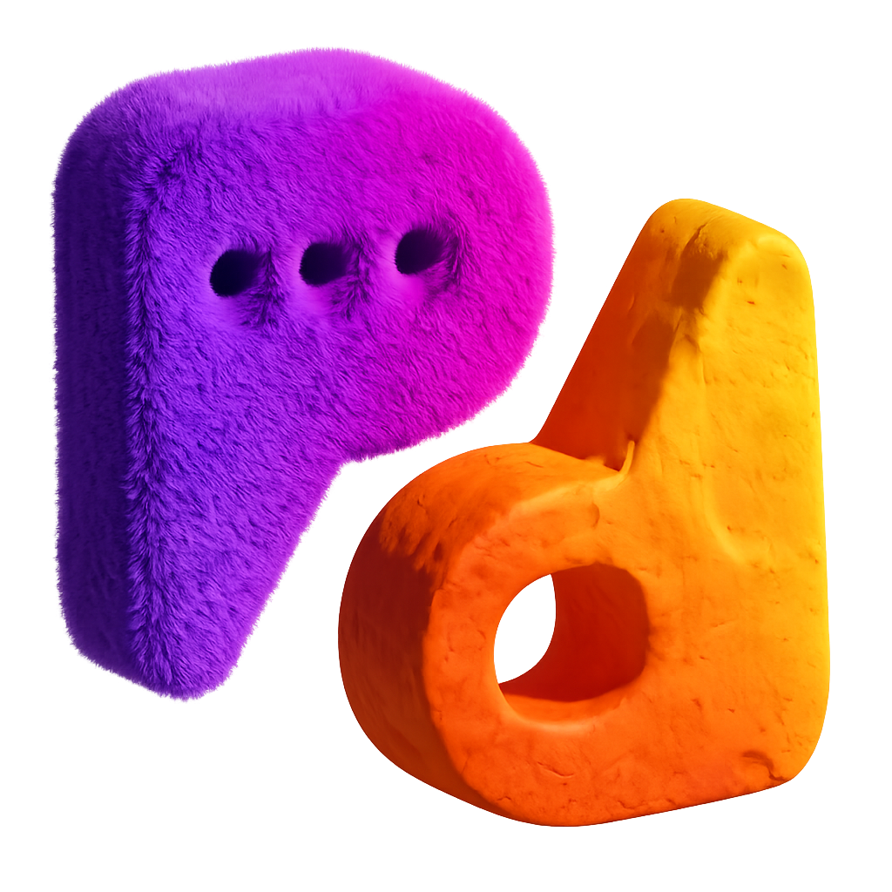

GALERIA
Registros da atuação dos estudantes

Distribuição dos panfletos

Pesquisa na Avenida Paulista

Participação dos estudantes
O Paulista Diversa é um projeto acadêmico desenvolvido por estudantes da Universidade São Judas Tadeu voltado ao mapeamento das percepções sociais sobre inclusão, cidadania e acesso da população LGBTQIAPN+ na Avenida Paulista.

O Paulista Diversa nasceu com o objetivo de compreender como diferentes grupos sociais percebem a inclusão e os acessos da população LGBTQIAPN+ na Avenida Paulista.
A iniciativa integra pesquisa acadêmica, extensão universitária e cidadania, promovendo reflexões sobre diversidade, direitos humanos e direito à cidade.
Mais do que produzir dados, o projeto busca incentivar o diálogo, fortalecer políticas de inclusão e ampliar a visibilidade da comunidade LGBTQIAPN+.
Durante a Parada do Orgulho LGBT+ de São Paulo de 2026, estudantes da Universidade São Judas Tadeu participaram de uma ação de pesquisa e extensão universitária realizada na Avenida Paulista.
Os alunos distribuíram panfletos contendo QR Codes que direcionavam os participantes para um questionário online.
O objetivo foi mapear como a sociedade percebe o acesso da população LGBTQIAPN+ a espaços de convivência, cultura, lazer, trabalho e cidadania.
A pesquisa também busca identificar diferenças de percepção entre pessoas de diferentes classes sociais, etnias e experiências de vida.
Compreender como a população percebe a inclusão da comunidade LGBTQIAPN+ nos espaços urbanos.
Identificar diferenças de percepção entre pessoas de diferentes classes sociais e etnias.
Investigar o acesso da comunidade LGBTQIAPN+ à cultura, trabalho, lazer e cidadania.
Produzir conhecimento que contribua para uma sociedade mais justa, plural e inclusiva.
A população LGBTQIAPN+ possui direitos garantidos pela Constituição Federal, por decisões do Supremo Tribunal Federal e por normas administrativas que asseguram igualdade, dignidade e proteção contra a discriminação.
Clique no botão abaixo para acessar uma página com informações sobre: